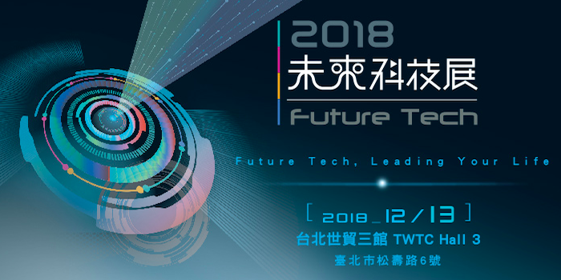

榮獲『科技突破獎』與『最佳技術人氣獎』!
Dec 31, 2018
參與之2018年未來科技展-《SpectroChip 智慧終端光譜晶片系統》技術與應用，榮獲2018未來科技展『科技突破獎』與『最佳技術人氣獎』！

慢性病成疾病主流 讓家醫科醫師告訴你為什麼要做「健康檢查」
台灣社會逐漸邁入已開發國家的人口型態，人口的疾病種類，也慢慢從傳染病轉變爲慢性病。由於慢性病的疾病進程很長，強調在未發之時提前發現的「預防醫學」便逐漸受到重視。